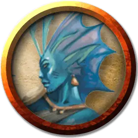

Мерфолк добытчик
Merfolk Salvager
Средний Гуманоид (Мерфолк), нейтральный

Класс Доспеха 12
Хиты 22 (4к8 + 4)
Скорость 10 футов, плавая 40 футов
| мод | спас | ||
|---|---|---|---|
| СИЛ | 10 | +0 | +0 |
| ЛОВ | 13 | +1 | +4 |
| ТЕЛ | 12 | +1 | +1 |
| мод | спас | ||
|---|---|---|---|
| ИНТ | 11 | +0 | +0 |
| МДР | 11 | +0 | +0 |
| ХАР | 12 | +1 | +1 |
Навыки Атлетика +3, Восприятие +2
Чувства пассивное Восприятие 12
Языки Общий, Акван
Опасность 1 (200 опыта)
Бонус мастерства +2
Особенности
Амфибия. Мерфолк может дышать и воздухом и под водой.
Действия
Мультиатака. Мерфолк совершает две атаки своей Коралловой рапирой.
Коралловая рапира. Рукопашная атака оружием: +4 к попаданию, досягаемость 5 футов, одна цель. Попадание: 6 (1к8 + 2) колющего урона.
Инъекция токсина (2/день). Рукопашная атака оружием: +4 к попаданию, досягаемость 5 футов, одна цель. Попадание: 6 (1к8 + 2) колющего урона, и существо должно преуспеть в спасброске Телосложения Сл 12, иначе станет парализованной до конца своего следующего хода.
Описание
Опытные поисковики затонувших кораблей и руин, найденных в самых глубоких водах, эти опытные воины помогают защищать своих сородичей с помощью похожего на рапиру оружия из живых кораллов. Добытчики сопровождают других мерфолков в поисках мусора, используя свои обостренные чувства, чтобы обнаружить угрозу. Их находят в союзе с людоящерами, указанными в "Опасность в Дануотере".